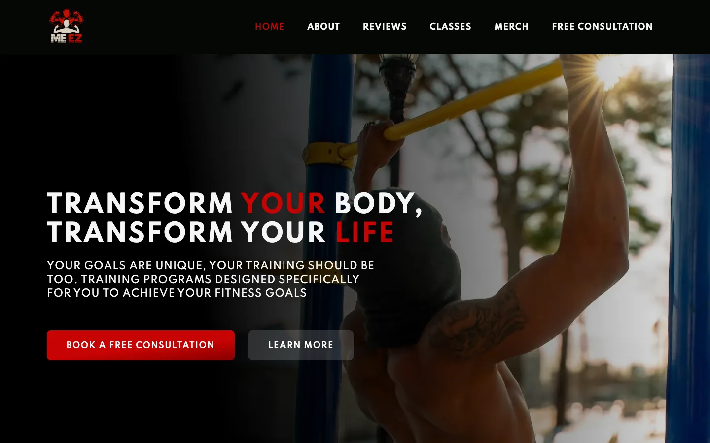

Built By Me EZ
How SWFT gave a hands-on service brand a clearer message, stronger authority, and a better path to leads.
Example Reviews

Overview
Built By Me EZ is the kind of business that depends on credibility, clarity, and a strong sense of practical value. Whether the visitor is evaluating a service, a program, or a brand promise rooted in helping people build with confidence, the website needs to establish authority quickly and make next steps obvious.
SWFT Studios rebuilt that digital foundation so the brand could present itself more clearly, speak to the right audience with more conviction, and convert site traffic into higher-intent conversations instead of passive interest.
The Problem
Before a brand like Built By Me EZ can scale awareness, it has to solve a positioning problem: visitors need to understand what the business offers, who it helps, and why it is worth trusting. If that message is fuzzy, traffic does not become leads.
- The business needed a more professional website that better matched the value of its offer.
- The brand story and practical benefits had to be easier to understand on first visit.
- The site needed a clearer conversion path for visitors ready to learn more or reach out.
- The platform had to be flexible enough to support future campaigns, content, and growth initiatives.
This is a common challenge for founder-led brands: the value is real, but the website is not packaging that value in a way that scales beyond word of mouth.
The Solution
Clearer brand communication: SWFT Studios shaped the website around understanding first. We organized the experience to answer the core questions visitors bring with them: What is this? Who is it for? Why should I care? What should I do next?
Conversion-aware structure: Instead of treating the site like a static presentation, we treated it like a sales and trust tool. Messaging, hierarchy, and calls to action were designed to move people from awareness into inquiry more intentionally.
Professional presentation: Visual polish, layout clarity, and responsive performance all help reinforce authority. When a service or founder brand looks organized online, it immediately feels more investable, more established, and more referral-ready.
Growth-ready foundation: The finished site gives Built By Me EZ a stronger base for SEO, content expansion, and campaign traffic, which is critical when the goal is not just to launch a site, but to build a business asset that keeps working over time.
Project Timeline
- Week 1: Discovery, audience understanding, and messaging audit
- Week 2: Site architecture and conversion planning
- Week 3-4: Visual design, content integration, and responsive build
- Week 5: CTA refinement, polish, and launch QA
- Week 6: Launch and handoff
Total timeline: 6 weeks from audit through launch.
The Outcome
The result is a stronger online presence at builtbymeez.com that gives the business a more serious platform for growth. Visitors now get a clearer understanding of the brand, a stronger first impression, and a better path toward taking action.
- The site supports lead generation more effectively by making the offer easier to understand.
- The brand presentation feels more professional and trustworthy.
- Built By Me EZ now has a more scalable base for future marketing and search visibility.
- The website works harder as a business asset instead of acting only as a placeholder presence.
That shift is where a lot of growth begins. When a brand can explain itself clearly online, everything from referrals to organic traffic starts converting better.
Growth Scorecard
SWFT strategic scoring based on the pre-launch audit and the final launch experience. These numbers represent readiness improvement on a 100-point scale, not claimed analytics from a private client dashboard.
Message clarity: 41 to 86 / 100
Authority signals: 44 to 82 / 100
Lead capture readiness: 33 to 80 / 100
SEO readiness: 36 to 78 / 100
Closing
SWFT Studios helped Built By Me EZ turn its digital presence into a clearer expression of the business itself, giving the brand a stronger voice, stronger authority, and a stronger platform for long-term growth.